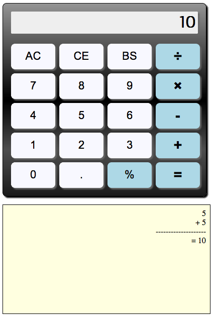

Sele... what?
X-Browser testing


X-OS testing


What do we want to achieve?

public interface ICalcPage {
public double displayed();
public ICalcPage clear();
public ICalcPage divide();
public ICalcPage multiply();
public ICalcPage add();
public ICalcPage substract();
public double equal();
public ICalcPage dot();
public ICalcPage n0();
public ICalcPage n1();
...
}
Developement vs. Testing
Management conclusion
The demo application
The demo application
The demo application
The demo application
The Interface
package ch.racic.selenium.poptalk.calc;
public interface ICalcPage {
public double displayed(); // This is the Display we see and we get it as a double.
public ICalcPage clear(); // Define all the function buttons.
public ICalcPage clearEntry();
public ICalcPage backspace();
public ICalcPage percent(); // I usually return itself as I'm lazy and the dot notation
public ICalcPage divide(); // looks pretty cool when reading the code.
public ICalcPage multiply();
public ICalcPage add();
public ICalcPage substract();
public double equal(); // On most tests we would need the displayed result anyway
public ICalcPage dot(); // Let's just return it and save as some strokes.
public ICalcPage n0();
public ICalcPage n1();
public ICalcPage n2();
public ICalcPage n3();
public ICalcPage n4();
public ICalcPage n5();
public ICalcPage n6();
public ICalcPage n7();
public ICalcPage n8();
public ICalcPage n9();
}
The Tests
@Test(testName = "Invoke", groups = {"init"})
public void targetServerReady() {
Assert.assertTrue("Page title is 'Calculator'?", driver.getTitle().equals("Calculator"));
}
@Test(testName = "Reset", groups = {"init"}, dependsOnMethods = {"targetServerReady"})
public void reset() {
Assert.assertTrue("Starts with 0?", calc.displayed() == 0);
Assert.assertTrue("Display changed to 5?", calc.n5().displayed() == 5);
Assert.assertTrue("Display resets to 0?", calc.clear().displayed() == 0);
}
@Test(testName = "Add numbers", groups = {"Operations"}, dependsOnGroups = {"init"})
public void additions() {
Assert.assertTrue("1+1=2", calc.clear().n1().add().n1().equal() == 2);
Assert.assertTrue("4+5=9", calc.clear().n4().add().n5().equal() == 9);
Assert.assertTrue("20+3=23", calc.clear().n2().n0().add().n3().equal() == 23);
Assert.assertTrue("501+345=846", calc.clear().n5().n0().n1().add().n3().n4().n5().equal() == 846);
}
Some Selenium boilerplate for my test
@BeforeSuite
public void suiteSetUp() throws IOException {
testconfig = new POConfig();
// Initialize driver we want to use
String browserToUse = testconfig.getProperty("browserToUse");
if(browserToUse.equals("HTMLUNIT")) {
driver = new HtmlUnitDriver(true);
} else if(browserToUse.equals("FIREFOX")) {
FirefoxProfile ffprofile = new FirefoxProfile();
ffprofile.setPreference("intl.accept_languages", "en-us,en");
driver = new FirefoxDriver(ffprofile);
} else if(browserToUse.equals("CHROME")) {
System.setProperty("webdriver.chrome.driver", "/path/to/chromedriver");
driver = new ChromeDriver();
} else if(browserToUse.equals("SAFARI")) {
driver = new SafariDriver();
} else if(browserToUse.equals("ANDROID")) {
driver = new AndroidDriver();
}
// load the calculator page
driver.navigate().to(testconfig.getProperty("targetURL"));
// initialize our page object, we do it here as its a single page application
calc = getPageObject(ICalcPage.class);
}
Look at the application source
<div id="result" class="display graygradient smallshadow">0</div> <div class="row"> <div id="calculator-button-ac" onmousedown="javascript:allclear();"><div>AC</div></div> <div id="calculator-button-ce" onmousedown="javascript:clearentry();"><div>CE</div></div> <div id="calculator-button-backspace" onmousedown="javascript:backspace();"><div>BS</div></div> <div id="calculator-button-÷" onmousedown="javascript:divide();"><div>÷</div></div> </div>
The use of the HTML-ID attribute makes it quite easy for us to automate this application.
- Even if there are no id's, we can use css, class, ... attributes
- If nothing else helps, XPath to the rescue
The Page Object Implementation
Define the fields we need
public class CalcPage implements ICalcPage{
@FindBy(id = "result")
private WebElement display;
@FindBy(id="calculator-button-ac")
private WebElement clear;
@FindBy(id="calculator-button-ce")
private WebElement clearEntry;
@FindBy(id="calculator-button-backspace")
private WebElement backspace;
@FindBy(id="calculator-button-%")
private WebElement percent;
...
}
The Page Object Implementation
Implement the action functions
public class CalcPage implements ICalcPage{
...
public double displayed() {
return Double.valueOf(display.getText());
}
public ICalcPage clear() {
clear.click();
return this;
}
public double equal() {
equal.click();
return Double.valueOf(display.getText());
}
...
}
<Thank You!>
You can find the source and this presentation @
https://github.com/rac2030/Page-Object-Pattern-Talk